SAE : réalisation d'un site ...
Bases de l'ergonomie
Quelques définitions
Un site ergonomique est un site utile:
- C'est ce que l'interface permet de faire (acheter des livres, lire ses mails, ...)
- Regroupe l'ensemble des micro-applications permettant aux utilisateurs d'enclencher le processus de décision
Un site ergonomique est un site utilisable:
- Permet la mise en oeuvre de la décision
- Un site est utilisable si il est :
- Efficace : l'utilisateur doit réussir à faire ce qu'il veut faire
- Efficient : Il doit faire ce qu'il veut avec rapidité
- Satisfaction : Le site web doit être au service de l'utilisateur
Intérêt de l'ergonomie
- En 1999 IBM repense toute l'ergonomie de son site web. En une semaine les ventes ont augmenté de 400%
- Après une refonte orientée utilisateur du site de Bell,le nombre de visites par semaine est passé de 300.000 à 450.000.
- Un test a été réalisé sur un site de vente de cheesecakes. Après refonte de l'ergonomie, le site a fait une augmentation de 900%
D'après des études menées par Nielsen et Gilutz:
- Une modification d'un site coûte 100 fois plus cher après le lancement que lors de la phase de conception
- Idéalement, il faut consacrer 50% d'un buget d'un site sur l'utilisabilité.
Quelques exemples de l'évolution de certaines ergonomies
yahoo1997
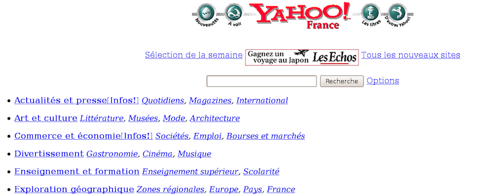
yahoo2021
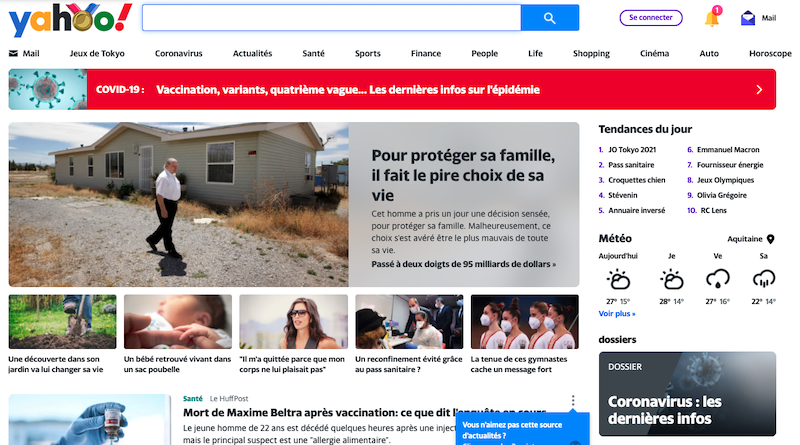
Equipe2000
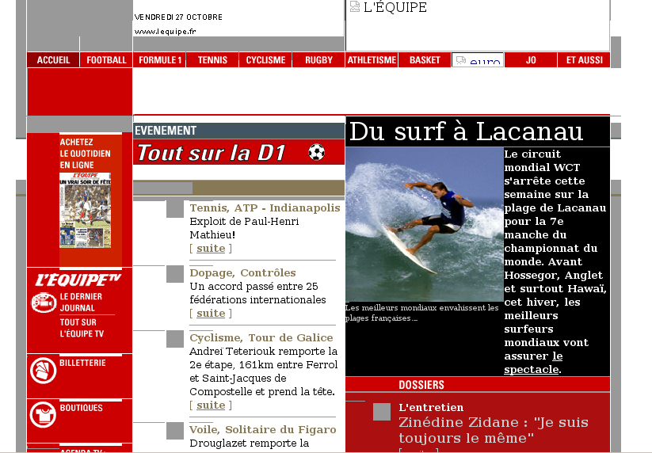
equipe2021
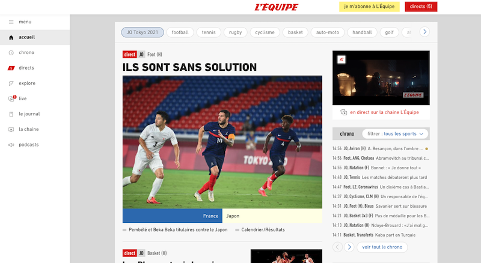
google2009
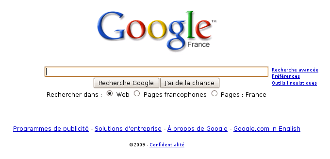
google2021
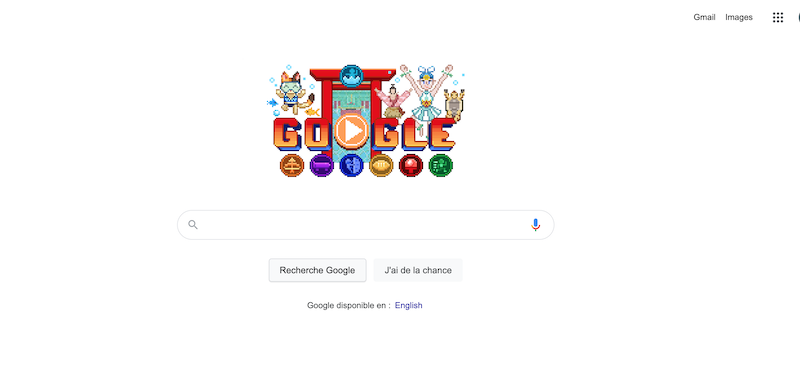
Quelques idées reçues
- La règle des 3 clics : ne prend en compte que la difficulté physique liée au clic et pas la difficulté mentale. Le chemin doit avant tout être simple!
- les internautes sont des idiots : il faut éviter de faire des sites trop simples. Il faut connaître les internautes visitant votre site et prendre en compte leurs caractéristiques.
- Les internautes lisent en F : complètement faux. c'est l'apparrence du site qui influence le parcours.
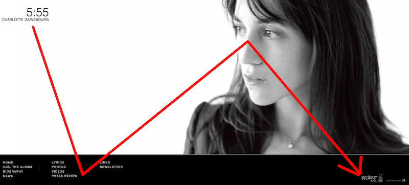
Quelques idées reçues
- Les internautes ne scrollent pas : vrai il y a 20 ans (pas de roulette sur les souris, les internautes ne savaient pas qu'on pouvait faire scroller une page). Eviter le scroll oblige à faire tenir l'information sur un espace trop réduit. Une étude a montré que 76% des internautes scrollent (et 22% jusqu'en bas)
- le site du monde fait environ 35000 pixels de haut!
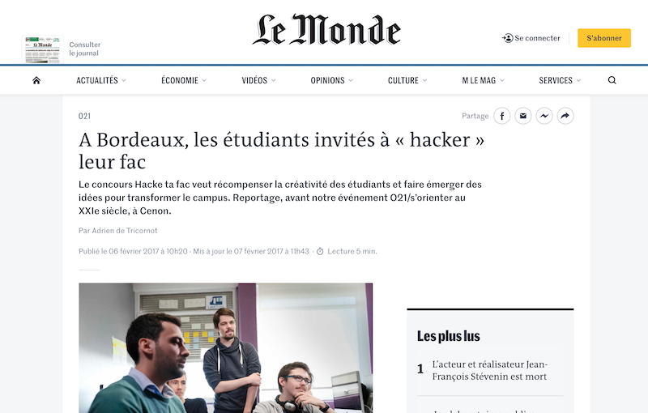
Les fondements de l'ergonomie
Les théories de la Gestalt
La loi de la proximité : La proximité visuelle serait traitée en tant qu'indice par notre cerveau pour préjuger d'une proximité conceptuelle. Les anciens sites de Calipage et d'Interflora ne l'appliquaient pas:
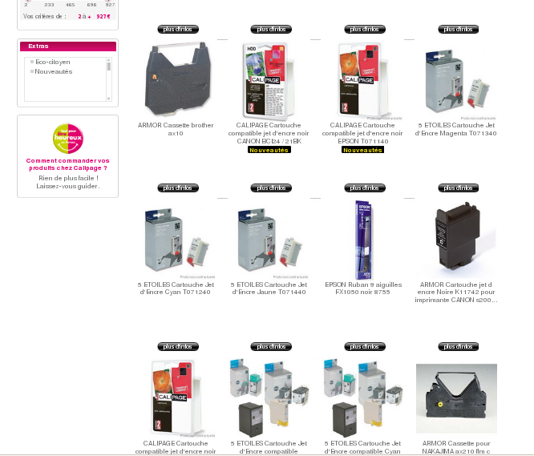
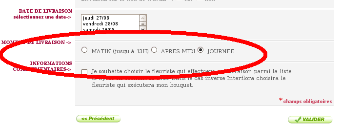
La loi de la similarité : Notre cerveau a tendance à regrouper les choses qui se ressemblent. Ainsi, différents attributs visuels peuvent nourrir la similarité de deux éléments (taille, forme, couleur, ...) dans le courant des années 2000, Apple a très bien utilisécette loi (avec entre autres le bouton choisir qui est de la même couleur que l'ipod choisi) :
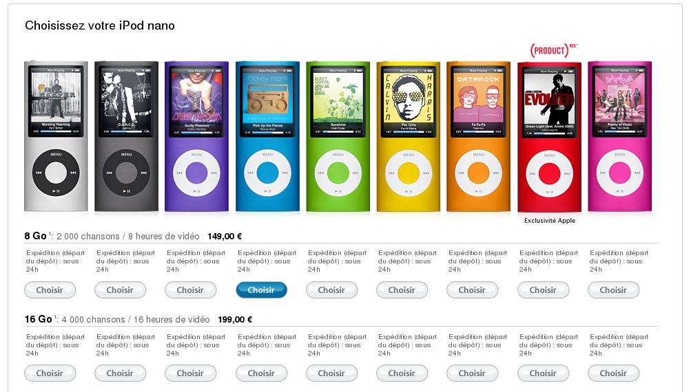
Concept d'affordance
L'affordance est la possibilité d'action suggérée par les caractéristiques d'un objet. Affordance d'une porte:
- signes implicites : places des gonds, forme de la poignée, ...
- signes explicites : un écriteau Poussez, quelqu'un qui vous donne l'information, ...
Pour un site web : les éléments de la page doivent vous donner des indices pour que vous arriviez à les utiliser. Notion importante pour :
- Savoir si un lien/image est cliquable (changement de l'icone de la souris, ...)
- Quelles sont les zones de saisie de texte pour se loguer
- Localisation de la zone de recherche
Regardez le module de recherche par mot-clef sur le site de fluctuat.net (avant et après refonte ergonomie)
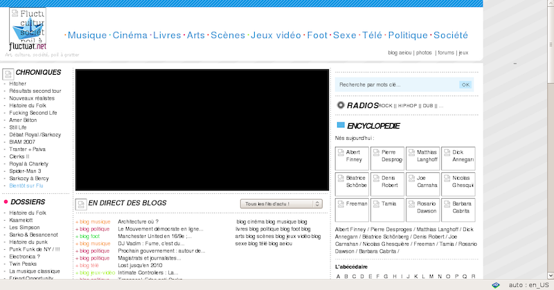
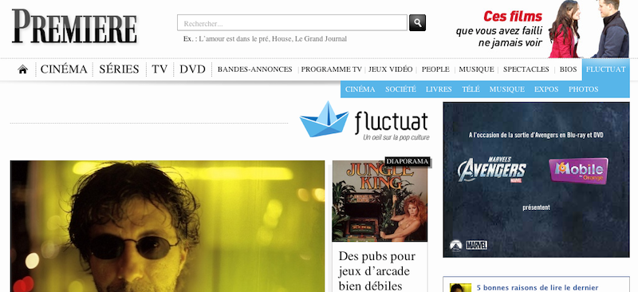
Et encore bien d'autres lois à connaître
- La loi de Fitts : une cible est d'autant plus rapide à atteindre qu'elle est proche et grande
- Le nombre magique de Miller (7 éléments à mémoriser et analyser en même temps)
- Loi de Hick : réduire le nombre de possibilités pour prendre une décision facile
Méthode personas
Définition
C'est une technique issue du marketing qui vise à créer des personnages fictifs dont ont va imaginer le comportement entre le moment où elle cherche à venir sur notre site et le moment ou elle a trouvé ce qu'elle cherchait.
Cette étape fait intervenir le client en début de projet afin de permettre la création du design et la structure du futur site web
Concepts
- Les personas sont des faux utilisateurs créés de toutes pièces pour des besoins méthodologiques
- Il faut définir 3 types de personas:
- Le persona primaire : cible de prédilection. En cas de conflit avec d'autres personas c'est lui qui aura le dernier mot. Ceci permet, par exemple, de déterminer les options par défaut du site.
- Les personas secondaires : utilisateurs moins fréquents ou exigences moindres. Par exemple : un utilisateur d'une application métier peut faire toujours appel à une seule et même fonction
- ante-persona : profil que vous ne voulez pas satisfaire. L'interface ne doit pas être modifiée pour eux (rarement utilisé)
-
Pour chaque persona, il faut définir l'ensemble de ses dimensions:
- informations socio-démographiques
- relation à la marque, historique client, relation aux concurrents
- habitudes, envies
- objectifs et missions sur le site.
De ces caractéristiques peuvent naître des scénarios types qui permettront de créer un site en adéquation avec ses besoins.
Exemple d'un personas (persona primaire du site BPI)
Philippe
Profil de Philippe :
- 33 ans, célibataire, laborantin
- projet de création d'entreprise innovante dans le domaine du recyclage des matières polluantes
- equipement : PC, Widows, chrome, laptop, freebox. Pas de smartphone
Comportement sur internet :
- Navigue uniquement chez lui, 2 fois/semaine 20 minutes
- N'aime pas internet et préfère des rapports humains directs
- Il cherche un site permettant de joindre une personne pour échanger et lui poser des questions
Relation avec BPI :
- ne connaît pas BPI
- il mûrit son projet de création depuis 3 mois
- il cherche un moyen de financer une partie de la création de son entreprise
- il arrive sur le site BPI en tapant les mots-clés suivants : aide financement entreprise
Scénario d'arrivée sur la page d'accueil en fonction de Philippe
- Comprendre si BPI peut participer au financement de son entreprise
- Chercher si BPI a déjà financé le type d'entreprise qu'il souhaite créer
- Chercher le numéro de téléphone d'un contact qui puisse le renseigner plus précisément grâce aux informations clés sur son projet
- Envoyer l'adresse du site à son futur associé afin qu'il puisse l'aider dans l'exploration de la piste BPI
Résultat
on retrouve bien les 4 scénarios dans la page d'accueil
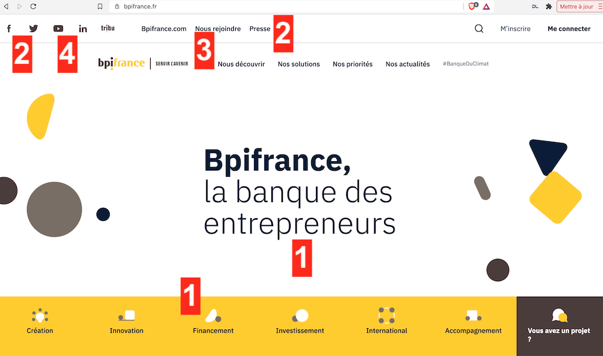
Rermarques sur les personas
- La communication dans votre équipe autour de personas est importante
- Un persona permet de ne plus dire ''l'internaute``
- Il faut en moyenne une dizaine de personas pour la création d'un site. Chacun d'entre eux peut vivre plusieurs années
- Dans les projets de grande envergure (chez IconMedialab) tous les moyens sont exploités pour communiquer posters affichés, porte-clés, cartes à jouer, et même des personas imprimés en grandeur nature)
Compléments possibles à la méthode personas:
- Questionner les internautes cibles. Exemples : si vous devez réaliser le site qui permet de jouer au loto en ligne il vous faudra aller dans les bureaux de tabac et points presses pour interroger les gens.
- Pour une refonte de site, il faut analyser les statistiques (cf google analytics, clickDensity, ...)
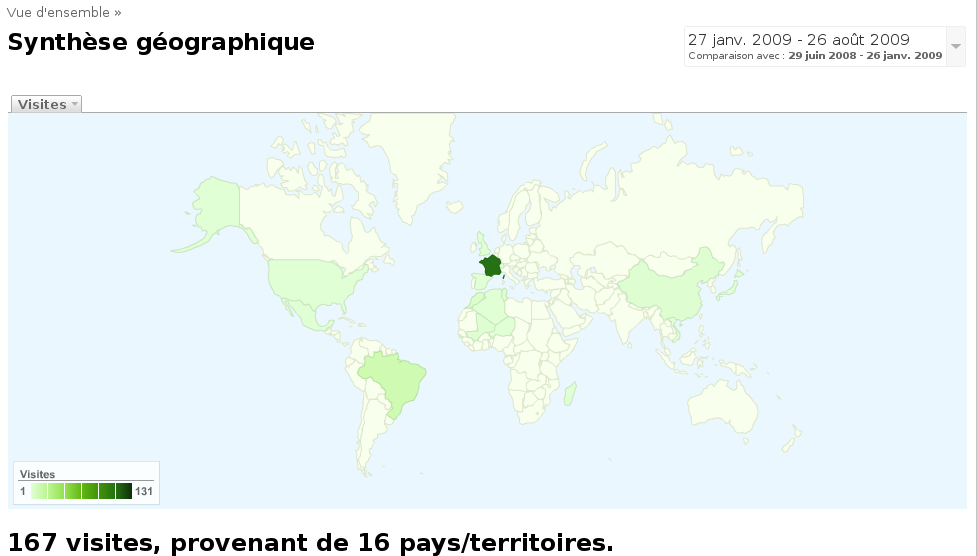
Ce qu'il faut retenir:
- Il n'y a pas une ergonomie universelle applicable à tous les sites (pas de recette miracle)
- Le bon sens ne suffit pas pour faire un site ergonomique
- L'ergonomie est contextuelle (dépend des utilisateurs, de vos objectifs, ...)
- La méthode personas est une étape importante. Elle permet d'éviter de faire des erreurs lors de la structuration du site et la création du design
SAE
- 2 séances encadrées de SAE (la semaine du 6/12)
- En Expression et communication vous avez créé du contenu. Il faut le présenter sous la forme d'un site web
- projet à faire en binôme
Ce qu'il faut remettre sur moodle pour le samedi 16 janvier 23H59.
- 1 fiche personas
- Maquette de la page d'accueil (avec un outils type https://balsamiq.com/wireframes/)
- Dépot gitlab de votre site web (penser à inviter votre enseignant référent
- un site web composé des pages suivantes :
- Page d'accueil : donne le contexte du site. Quel est l'intérêt de ce site.
- Présentation de l'entreprise
- Analyse PESTE(L) de son macro-environement
- Contacts avec un formulaire (qui ne fera rien)
- Mentions légales
- Informations complémentaires :
- Interditction de prendre un template existant
- Utilisation au choix (pour la mise en page) : Flex, Bootstrap ou Grid.
- le site devra être responsive (tailles desktop et smartphone)
- Critères de notation
- Respect des consignes et des dates
- Pertinence de la fiche personas
- Adéquation maquette/site web
- Utilisation du dépôt GIT
- Qualité du site web au sens des critères établis lors de la séance 9
- Qualité UX/UI